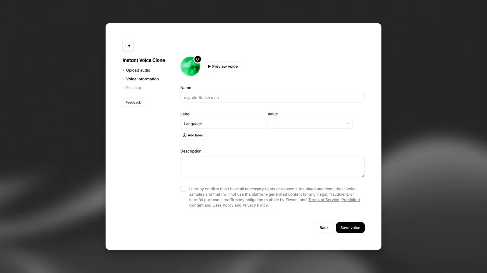
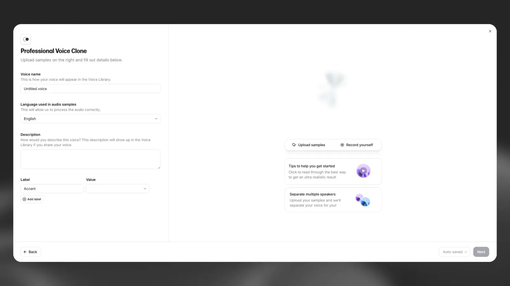
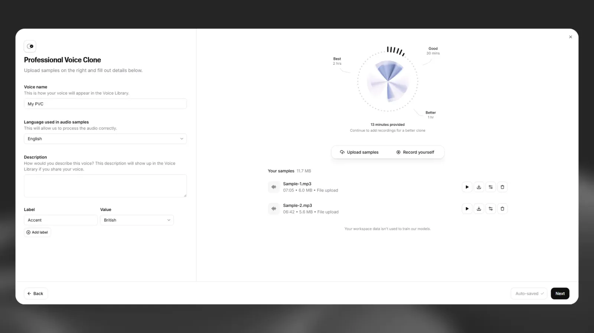
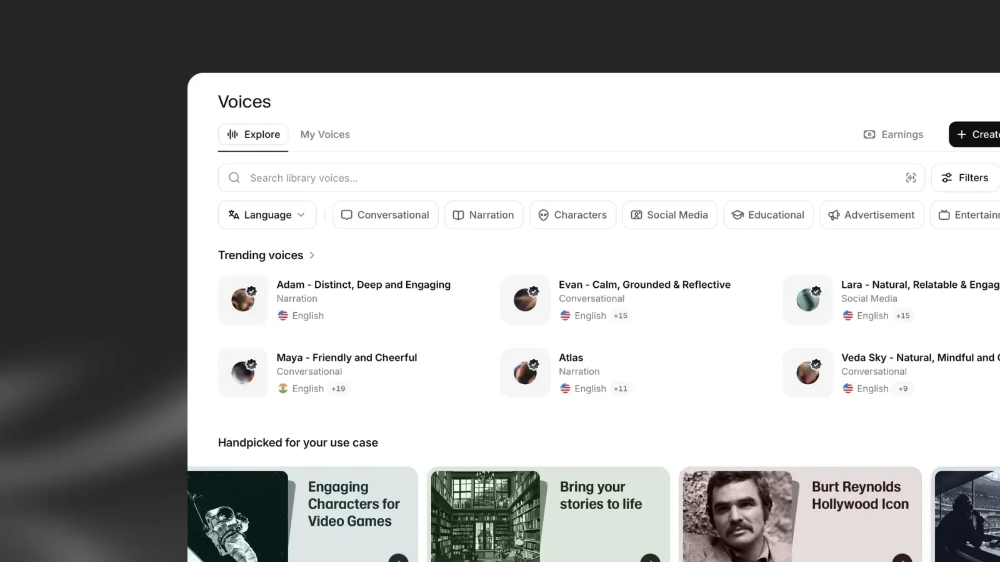
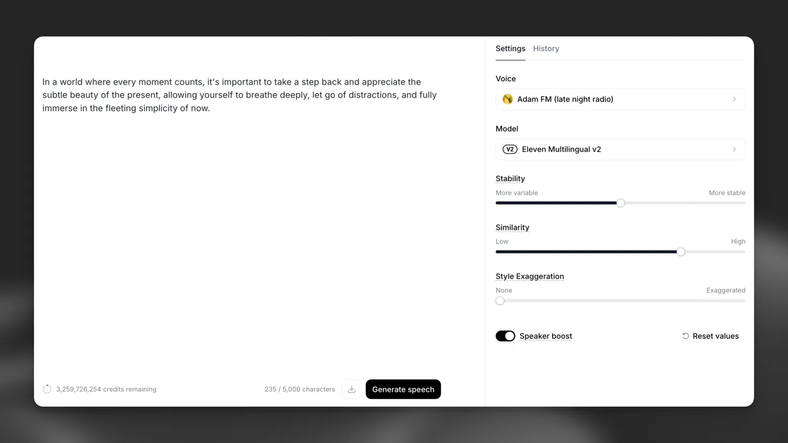
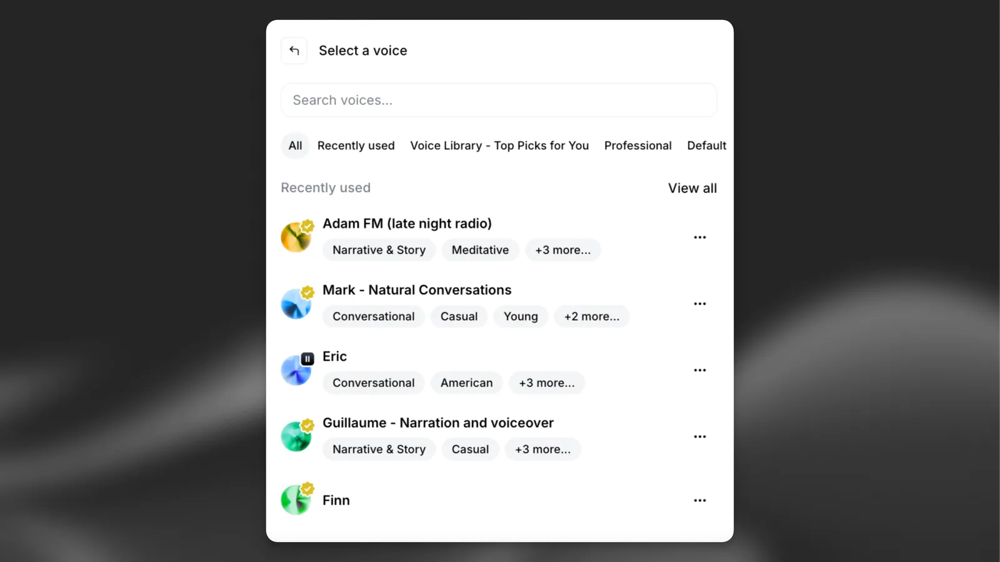
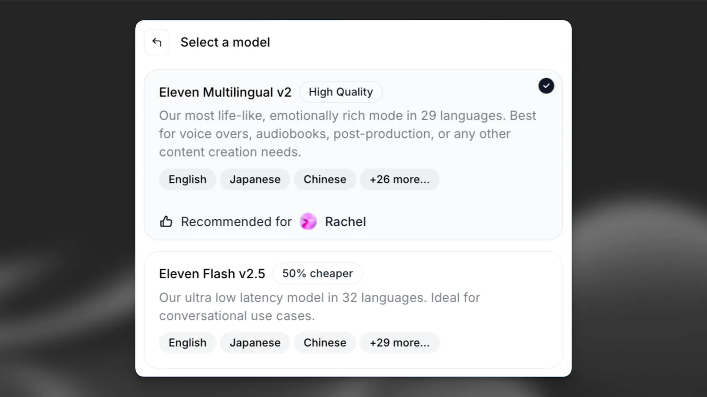
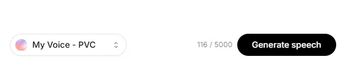

AI 配音入门
AI 配音入门如何使用 ElevenLabs
想让 AI 用自己的声音读稿，或者给视频配上自然的旁白，可以用 ElevenLabs。先选好声音，再把文案放进 Text to Speech（文字转语音），就能生成配音并下载到电脑。
声音有三种准备方式：即时克隆自己的声音、专业克隆自己的声音，以及使用声音库里的现成声音。下面从套餐选择开始，一步步走到配音导出。
配图采用 ElevenLabs 官方教程中的真实操作界面截图，点击图片可放大查看。不同版本的布局可能略有变化，按图中的英文功能名称寻找即可。
先注册账号，再按需求选套餐
打开 ElevenLabs 官网，点击 Sign up（注册）创建账号。登录后先确定是否需要克隆本人声音，再进入订阅页面选择套餐。
| 套餐 | 价格 | 每月积分 | 适合做什么 |
|---|---|---|---|
| Free 免费版 | $0 | 10,000 | 体验部分现成声音，非商业用途 |
| Starter 入门版 | $6／月 | 30,000 | 即时克隆、使用现成声音做商业配音 |
| Creator 创作者版 | 首月优惠 $11 之后 $22／月 | 121,000 | 专业克隆，也包含即时克隆功能 |
这些是按月订阅费用，不是无限量配音。生成音频会消耗积分，消耗量取决于文本、模型和所选声音；不要把积分直接理解成固定的配音分钟数。若额度不够，再按实际用量升级。
Starter 页面还展示过首月 $1 的活动，但活动日期与当前日期存在出入，本文按常规月费列出。首月优惠、税费和最终扣款金额，以自己账号的结账页面为准。
价格核对：2026-11-15 · 官方套餐与积分说明
方式一：即时克隆自己的声音
最低套餐：Starter，$6／月。适合想快速试用本人音色、先看看克隆效果的人。
准备 1～2 分钟自己的说话录音。找安静的房间，用自然语气朗读，保持音量和距离稳定，避免音乐、回声和其他人说话。即时克隆并不是录得越长越好，官方不建议为了提升效果而上传超过 3 分钟的素材。
- 点击左侧 Voices（声音），再点击 ＋。
- 选择 Instant Voice Clone（即时声音克隆）。
- 上传录音，或按页面提示直接录制。
- 给声音命名，确认声音使用授权，点击 Save voice（保存声音）。
- 进入 My Voices（我的声音），找到刚保存的声音，点击 Use voice（使用声音）。
保存声音后，还需要输入文案才能得到配音。接着看下方的「生成与下载配音」。

方式二：专业克隆自己的声音
最低套餐：Creator，首月优惠 $11，之后 $22／月。适合长期制作视频、课程或有声内容，对本人音色的还原要求更高的人。
至少准备 30 分钟的本人说话录音，想获得更好的效果，建议准备 2～3 小时。尽量使用同一套设备，保持环境、距离和说话方式一致。素材中只保留自己的声音，避免背景音乐、明显噪声和回声。

- 进入 Voices → ＋ → Professional Voice Clone（专业声音克隆）。
- 创建声音，上传录音素材，查看系统对时长和质量的反馈。
- 按页面提示完成本人声音验证，尽量使用与素材录制时相近的设备和语气。
- 提交训练，在 My Voices 中查看进度，等待完成通知。
- 训练完成后，找到自己的声音，点击 Use（使用），继续生成配音。
专业克隆需要训练，不是上传后马上就能使用。最终相似度受素材质量影响，干净、稳定的录音比堆积大量杂乱素材更有帮助。

方式三：使用声音库里的现成声音
不想录音，或者需要不同语言、口音和角色的配音，可以直接挑选声音库。免费版可体验部分声音；用于商业内容，至少选择 Starter，$6／月。
- 点击左侧 Voices → Explore（探索），进入声音库。
- 按语言、口音、性别和用途筛选。例如英文解说，可以先筛选 English，再选择美式或英式口音和 Narration（旁白）。
- 点击试听，听听声音是否适合自己的内容。
- 选中后直接使用，或保存到 My Voices，方便下次继续选择。
部分声音只对付费账号开放。如果看到 2× 等积分倍率，代表使用该声音会消耗更多积分，生成前留意页面提示。

选好声音后：用 Text to Speech 生成配音
克隆或挑选声音，是决定「谁来读」；Text to Speech，是让这个声音读出你的文案。上面三种方式准备好的声音，最后都可以在这里生成配音。
-
打开 Text to Speech
在左侧菜单点击 Text to Speech（文字转语音）。如果界面按产品分组，先进入语音创作区域或 Playground，再找到这个功能。
-
粘贴要朗读的文案
把配音稿放进文本框。想要中文配音就输入中文，想要英文配音就先准备好英文稿。这里是朗读文字，不会自动把中文稿翻译成英文。
建议先粘贴两三句话测试。例如：「大家好，欢迎来到我的频道。今天带你一起看看，如何用 AI 制作视频配音。」

图 5 · 左侧输入文案，右侧选择 Voice 和 Model，下方黑色按钮是 Generate speech。右上角的 History 是历史记录入口。图片来源：官方文字转语音教程 -
选择由哪个声音来读
点击当前声音的名称或声音选择框。在 My Voices 中选自己的克隆声音，或者选择刚才在声音库里找到的声音。确认选中的名称正确。

图 6 · 点当前声音后打开 Select a voice。可直接搜索声音名称，也可从分类里选择。图片来源：官方文字转语音教程 -
选择模型，先用默认设置测试
在 Model（模型） 中选择当前声音可用、并支持目标语言的模型。第一次使用可以先保留默认设置；需要调整语速、稳定性等参数时，再根据试听结果逐项修改。不同模型提供的设置可能不同。

图 7 · 在 Select a model 中查看模型和支持语言。截图展示的是官方示例中的 v2 和 v2.5，实际可选模型以你的账号当前页面为准。图片来源：官方文字转语音教程 -
点击 Generate speech
点击 Generate speech（生成语音），等待音频生成。生成会使用账号积分，先看清页面显示的消耗量和剩余额度，再提交较长文案。

图 8 · 左侧是选中的声音，右侧黑色按钮为 Generate speech。旁边的 116 / 5000 是示例文本字数与上限，不是套餐余额。图片来源：官方文字转语音教程 -
试听并调整
播放生成的音频，检查名字、数字的读法，以及停顿和语气。效果不合适，可以改文案的标点、句子长度或声音设置后重新生成。重新生成通常也会消耗积分，先把短段调好，再制作整篇。
-
下载配音，导入剪辑软件
满意后点击音频旁的下载图标，可以直接保存 MP3。需要 WAV 时，点击图 5 右上角的 History（历史记录），找到对应音频，点该条记录的下载图标，再选择 WAV。窄屏界面可能用时钟样式的图标表示历史记录。
MP3 文件较小，便于发送；WAV 适合导入剪映、Final Cut Pro 等软件继续剪辑。下载为 WAV 不会把原本的音频自动变成更高质量。之前没有下载的配音，也可以在 History 里重新找到。
界面按钮名称可能随版本调整，以当前页面为准。Text to Speech 官方操作与下载说明
付款不方便怎么办？
如果没办法在官网付款，也可以去闲鱼 App 搜索「ElevenLabs 成品号」。购买前确认套餐等级、剩余额度、有效期，以及账号是否独享。要做专业克隆，就确认账号具备 Creator 或更高套餐，并且还有可用的专业克隆名额。
成品号不是给自己的原账号充值。收到账号后，先在订阅页面核对实际套餐和额度；专业克隆仍需完成本人声音验证。